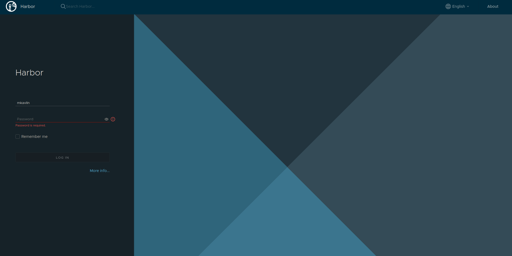
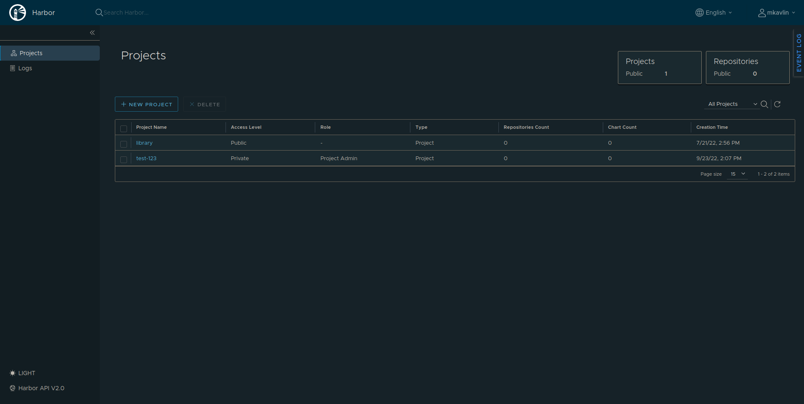
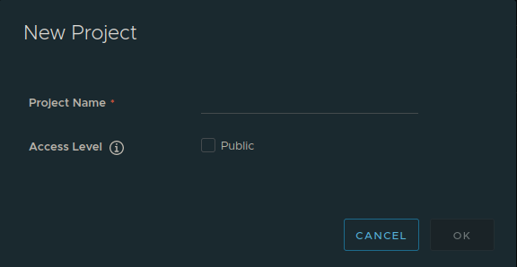
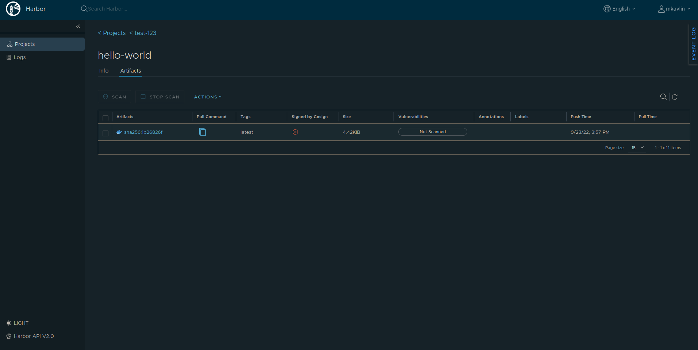

Container Registry#
The GEOAnalytics Canada Platform hosts a Container Registry to allow users to share and manage Docker images within specific projects. Within each project, an image repository is available to push and pull Docker container images. In this notebook, we will learn how to login, create a project, and finally how to push/pull Docker images within the Container Registry.
1. Logging into the Container Registry and creating a Project#
To access the container registry follow this link: https://registry.eo4ph.geoanalytics.ca/ The registry can be accessed through the GEOAnalytics Canada home page by clicking on “Container Registry”.
The link will take you to the container registry’s homepage (see the image below). You can log in using your GEOAnalytics Canada credentials.

Once you have accessed the container registry, you will find yourself in the Projects Tab. Click on the “NEW PROJECT” button (see the image below).

Input your desired project name, and leave the Access Level as private (keep the “Public” box unchecked). Click “OK” (see the image below).

2. How to link your workspace to the Container Registry#
Now we will use the terminal to login our Docker CLI to our Container Registry. To do this we will require our GEOAnalytics Canada username and password. To start, run the command below: 1. `docker login registry.eo4ph.geoanalytics.ca` 2. When prompted input your GEOAnalytics Canada username and press enter. 3. When prompoted input your GEOAnalytics Canada password and press enter. Now that this is done we can push or pull Docker images from our Container Registry's projects.3. Adding Docker Images to the Container Registry#
In this section we will be exploring how to add images to the container registry.
We’ll start by running a few commands to show how Docker works.
The command below will pull the hello-world Docker image from the Dockerhub, if not present already, and run it.
docker run hello-world
Now let’s try pushing the hello-world image into our container registry. To do that we must rename the image from “hello-world” to the location of our container registry, using the docker tag <source-img-name> <target-img-name> command. The target image name is the registry location because we want to push the image to a private registry and not the central Docker registry. In this example I’m going to push the image to the test registry I created called ‘test-123’.
docker tag hello-world registry.eo4ph.geoanalytics.ca/test-123/hello-world
Now that we have pushed the image to our container registry location, let’s run the image.
docker run registry.eo4ph.geoanalytics.ca/test-123/hello-world
The final step is to push the local Docker image to our test-123 repository. This is done by executing the docker push <img-name> below:
docker push registry.eo4ph.geoanalytics.ca/test-123/hello-world
Now head over to the Container Registry and click on Projects > test-123. You will see the Docker image you just pushed added to the repository’s container registry!

These were a just a few Docker commands we explored, to learn all the Docker commands available, take a look at the Docker documentation and a sample Docker workflow:
Important Note: NEVER run a Docker image you don’t know about. Only run a dockerfile from a trusted page and make sure to examine its source code!